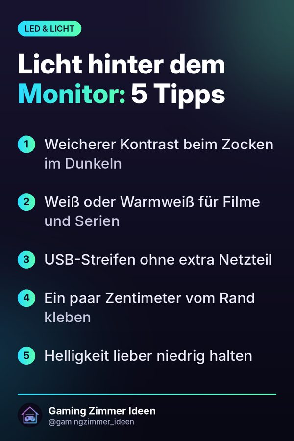

Ideen › LED Beleuchtung Gaming Zimmer
Licht hinter dem Monitor: 5 Tipps für entspannteres Zocken am Abend

Bias Lighting erklärt: Ein LED-Streifen hinter dem Monitor sorgt für weicheren Kontrast, wenn du abends zockst. Weiß oder Warmweiß passt zu Filmen, ein USB-Streifen braucht kein extra Netzteil, und mit etwas Abstand zum Rand und niedriger Helligkeit wirkt das Licht am schönsten. Jetzt merken!
Auf einen Blick
- Weicherer Kontrast beim Zocken im Dunkeln
- Weiß oder Warmweiß für Filme und Serien
- USB-Streifen ohne extra Netzteil
- Ein paar Zentimeter vom Rand kleben
- Helligkeit lieber niedrig halten